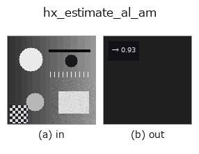

halcon_ext op• Data kinds: image → feature
• Call: fullseye.apply(img, "hx_estimate_al_am", a=0.5, b=0.5) (the 2-D model is one image plus two scalar knobs a,b∈[0,1])
• HALCON equivalent: estimate_al_am (the HALCON reference is a useful guide to its meaning and parameters)

*The figure is the actual output on a synthetic 128×128 input. Left: input, right: output. Point clouds are drawn as a top-down scatter (brightness = z), 1-D series as a line plot, volumes as the maximum-intensity projection along z, videos as the middle frame, complex images as magnitude; return values that are not pictures are shown as the values themselves.*
*Knob a does not change the output (measured: identical at 0.1 / 0.5 / 0.9).*
*Knob b does not change the output (measured: identical at 0.1 / 0.5 / 0.9).*
Estimate albedo (reflectance) and ambient light: albedo ~ the luminance range; this op returns the albedo.
Returns the difference between the image maximum and minimum max(v) - min(v), clipped to [0,1], as np.float64. An estimate that substitutes the luminance dynamic range for the relation "the higher the reflectance (albedo), the larger the light-dark contrast of the shading". Ambient (ambient light) is neither computed nor returned.
• a, b are unused.
It is determined by just 2 pixels, the maximum and the minimum, so even 1 saturated pixel or dark spot makes it stick at 1. It is sensitive to noise, so apply hx_mean_shape or median_rect beforehand. On a min-max normalised image it is always 1 and meaningless. The slant estimate hx_estimate_sl_al_lr assumes reflectance 1; dividing by this value to correct it is the intended use.
• gallery2d_halcon_ext family guide
• Sample-data catalog (download URLs / licences) — 2-D uses skimage.data (BSD/public domain) plus synthetic images; 3-D lists download URLs for real data sources (Stanford, PDS, …).
• Operator provenance and references — the sources of the research/methods this op family came from.
• The canonical algorithm (author, year) and its uses are named in the family usage guide above.
The program below has been verified to run (same input as the figure). In Studio's help this block becomes buttons that load and run it on the spot.
hx_estimate_al_am 0.50 0.50
▸ Load this pipeline · Load & run
• gallery2d_halcon_ext — py -3.11 examples/gallery2d_halcon_ext.py
feature as input)halcon_ext)hx_gen_circle · hx_gen_ellipse · hx_gen_rectangle2 · hx_gen_checker_region · hx_gen_grid_region · hx_gabor · hx_fit_surface1 · hx_fit_surface2
*Provenance: ops.py — 2D operator registry. This per-op note is generated by tools/opdocs.py md (do not hand-edit).*
© 2026 Kazufumi Furuse — Fullseye operator documentation. Licensed under Apache-2.0.